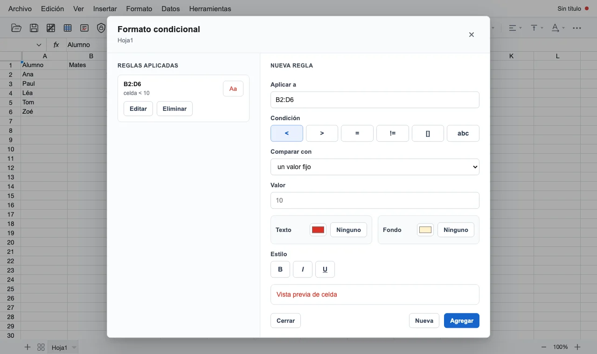

Formato condicional
Una regla cambia el aspecto de las celdas de un rango que cumplen una condición. Sigue los valores, introducidos o calculados.
Crear una regla
- Seleccionar el rango, sin su encabezado.
- o Formato › Formato condicional.
- Elegir la condición, el valor de comparación, los colores o el estilo.
- Agregar.

| Condición | La celda |
|---|---|
< | es menor que |
> | es mayor que |
= | es igual a |
!= | es distinta de |
[] | está entre dos valores, incluidos los extremos |
abc | contiene un texto, en mayúsculas o minúsculas |
Con qué comparar
| Comparar con | Ejemplo |
|---|---|
| un valor fijo | las notas inferiores a 10 |
| una celda fija | las notas inferiores al umbral escrito en F1 |
| una columna de la misma fila | en la columna C, los valores superiores a los de la columna B, fila por fila |
Aspecto
Texto y Fondo eligen los colores, Ninguno los retira; B, I, U ponen en negrita, cursiva, subrayado. Hace falta al menos un color o un estilo.
Varias reglas
La columna de la izquierda lista las reglas de la hoja: Editar, Eliminar. Si varias reglas se aplican a una celda, prevalece la última de la lista, color por color.
En un rango cubierto por una regla, los colores de texto y de fondo dados directamente a las celdas dejan de mostrarse.
Las reglas se guardan en el archivo de Excel como formatos condicionales de Excel.